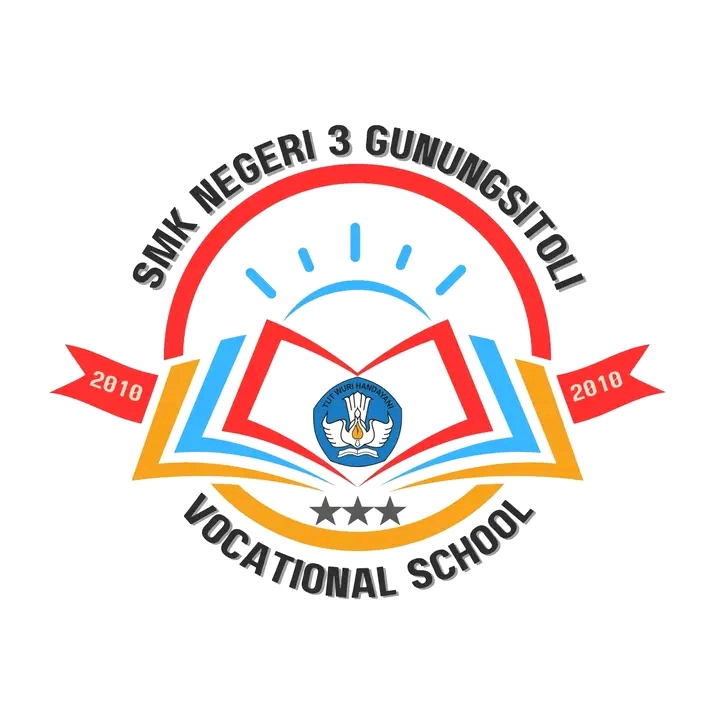
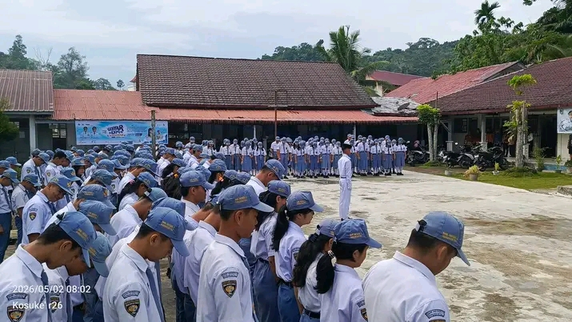
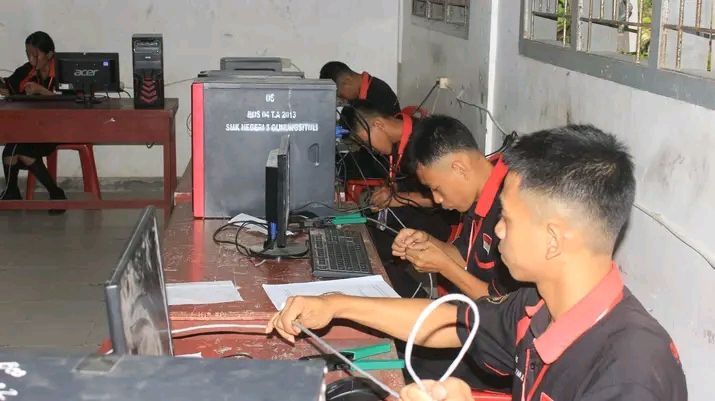
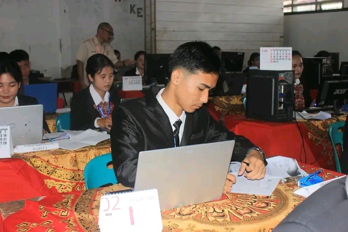
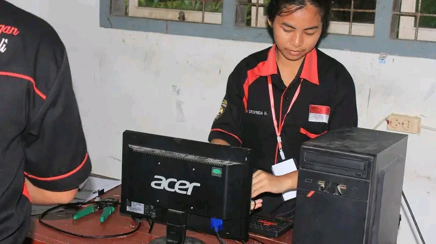
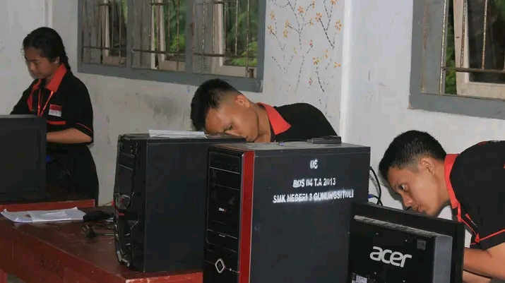

SMK Negeri 3 Gunungsitoli berkomitmen penuh untuk menyelenggarakan pendidikan kejuruan yang bermutu, adaptif, dan berwawasan masa depan. Kami memadukan kurikulum nasional modern dengan praktik industri nyata guna memastikan lulusan kami siap bersaing di pasar kerja global maupun berwirausaha secara mandiri.
Lihat SelengkapnyaProgram keahlian premium yang dirancang khusus untuk memenuhi standar kebutuhan dunia industri modern saat ini.

Fokus pada penguasaan jaringan komputer, administrasi server, keamanan siber, serta perakitan dan konfigurasi infrastruktur IT terkini.
Detail JurusanMengembangkan keterampilan administrasi bisnis modern, manajemen kearsipan digital, komunikasi korporat, hingga tata kelola perkantoran berbasis teknologi.
Detail JurusanIkuti terus kabar kegiatan resmi, prestasi teranyar, dan pengumuman penting seputar SMK Negeri 3 Gunungsitoli.

Pelaksanaan Ujian Kompetensi Keahlian (UKK) tahun ini berjalan sukses berkat kerja sama intensif dengan mitra industri eksternal berskala nasional.

Jurusan Manajemen Perkantoran sukses menyelenggarakan pelatihan komunikasi korporat interaktif guna mempercepat adaptasi siswa ke dunia kerja asli.

Simak ulasan mendalam mengenai pentingnya integrasi teknologi awan (cloud computing) yang kini diadopsi penuh dalam materi ajar praktikum TKJ.